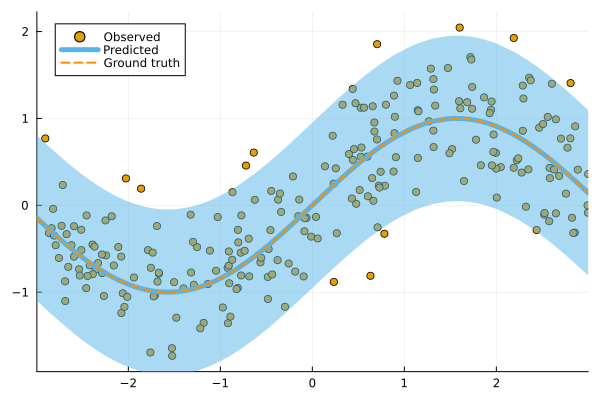
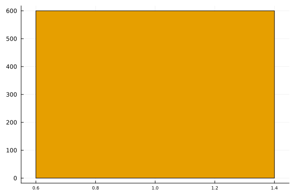

ConformalPrediction
Documentation for ConformalPrediction.jl.
ConformalPrediction.jl is a package for Uncertainty Quantification (UQ) through Conformal Prediction (CP) in Julia. It is designed to work with supervised models trained in MLJ (Blaom et al. 2020). Conformal Prediction is distribution-free, easy-to-understand, easy-to-use and model-agnostic.
🃠Quick Tour
First time here? Take a quick interactive tour to see what this package can do.
The link takes you to a Pluto.jl 🈠notebook hosted on binder. In my own experience, this may take some time to load, certainly long enough to get yourself a hot beverage ☕. Alternatively, you can run the notebook locally or skip the tour for now and read on below.
Local Tour
To run the tour locally, just clone this repo start Pluto.jl as follows:
] add Pluto
using Pluto
Pluto.run()All notebooks are contained in docs/pluto.
📖 Background
Conformal Prediction is a scalable frequentist approach to uncertainty quantification and coverage control. It promises to be an easy-to-understand, distribution-free and model-agnostic way to generate statistically rigorous uncertainty estimates. Interestingly, it can even be used to complement Bayesian methods.
The animation below is lifted from a small blog post that introduces the topic and the package ([TDS], [Quarto]). It shows conformal prediction sets for two different samples and changing coverage rates. Standard conformal classifiers produce set-valued predictions: for ambiguous samples these sets are typically large (for high coverage) or empty (for low coverage).

🚩 Installation
You can install the latest stable release from the general registry:
using Pkg
Pkg.add("ConformalPrediction")The development version can be installed as follows:
using Pkg
Pkg.add(url="https://github.com/pat-alt/ConformalPrediction.jl")🔠Usage Example
To illustrate the intended use of the package, let’s have a quick look at a simple regression problem. We first generate some synthetic data and then determine indices for our training and test data using MLJ:
using MLJ
# Inputs:
N = 600
xmax = 3.0
using Distributions
d = Uniform(-xmax, xmax)
X = rand(d, N)
X = reshape(X, :, 1)
# Outputs:
noise = 0.5
fun(X) = X * sin(X)
ε = randn(N) .* noise
y = @.(fun(X)) + ε
y = vec(y)
# Partition:
train, test = partition(eachindex(y), 0.4, 0.4, shuffle=true)We then import a decision-tree based regressor (EvoTrees.jl) following the standard MLJ procedure.
EvoTreeRegressor = @load EvoTreeRegressor pkg=EvoTrees
model = EvoTreeRegressor(rounds=100) To turn our conventional model into a conformal model, we just need to declare it as such by using conformal_model wrapper function. The generated conformal model instance can wrapped in data to create a machine. Finally, we proceed by fitting the machine on training data using the generic fit! method:
using ConformalPrediction
conf_model = conformal_model(model; method=:jackknife_plus)
mach = machine(conf_model, X, y)
fit!(mach, rows=train)Predictions can then be computed using the generic predict method. The code below produces predictions for the first n samples. Each tuple contains the lower and upper bound for the prediction interval.
show_first = 5
Xtest = selectrows(X, test)
ytest = y[test]
ŷ = predict(mach, Xtest)
ŷ[1:show_first]5-element Vector{Tuple{Float64, Float64}}:
(0.325476135568554, 2.5420611849529986)
(-0.8093221495344456, 1.513229072277355)
(0.24246467414510378, 2.531848511672005)
(-0.37629465789570005, 1.9144457517084361)
(-0.5411423339519135, 1.712803571302072)For simple models like this one, we can call a custom Plots recipe on our instance, fit result and data to generate the chart below:
using Plots
zoom = -0.5
plt = plot(mach.model, mach.fitresult, Xtest, ytest, zoom=zoom, observed_lab="Test points")
xrange = range(-xmax+zoom,xmax-zoom,length=N)
plot!(plt, xrange, @.(fun(xrange)), lw=1, ls=:dash, colour=:black, label="Ground truth")
We can evaluate the conformal model using the standard MLJ workflow with a custom performance measure. You can use either emp_coverage for the overall empirical coverage (correctness) or ssc for the size-stratified coverage rate (adaptiveness).
_eval = evaluate!(mach; measure=[emp_coverage, ssc], verbosity=0)
display(_eval)
println("Empirical coverage: $(round(_eval.measurement[1], digits=3))")
println("SSC: $(round(_eval.measurement[2], digits=3))")PerformanceEvaluation object with these fields:
measure, operation, measurement, per_fold,
per_observation, fitted_params_per_fold,
report_per_fold, train_test_rows
Extract:
┌───────────────────────────────────────────────────────────┬───────────┬───────
│ measure │ operation │ meas ⋯
├───────────────────────────────────────────────────────────┼───────────┼───────
│ emp_coverage (generic function with 1 method) │ predict │ 0.95 ⋯
│ size_stratified_coverage (generic function with 1 method) │ predict │ 0.90 ⋯
└───────────────────────────────────────────────────────────┴───────────┴───────
3 columns omitted
Empirical coverage: 0.957
SSC: 0.907🔠Status
This package is in its early stages of development and therefore still subject to changes to the core architecture and API.
Implemented Methodologies
The following CP approaches have been implemented:
Regression:
- Inductive
- Naive Transductive
- Jackknife
- Jackknife+
- Jackknife-minmax
- CV+
- CV-minmax
Classification:
- Inductive (LABEL (Sadinle, Lei, and Wasserman 2019))
- Naive Transductive
- Adaptive Inductive
The package has been tested for the following supervised models offered by MLJ.
Regression:
keys(tested_atomic_models[:regression])KeySet for a Dict{Symbol, Expr} with 5 entries. Keys:
:nearest_neighbor
:evo_tree
:light_gbm
:linear
:decision_treeClassification:
keys(tested_atomic_models[:classification])KeySet for a Dict{Symbol, Expr} with 5 entries. Keys:
:nearest_neighbor
:evo_tree
:light_gbm
:decision_tree
:logisticImplemented Evaluation Metrics
To evaluate conformal predictors we are typically interested in correctness and adaptiveness. The former can be evaluated by looking at the empirical coverage rate, while the latter can be assessed through metrics that address the conditional coverage (Angelopoulos and Bates 2021). To this end, the following metrics have been implemented:
emp_coverage(empirical coverage)ssc(size-stratified coverage)
There is also a simple Plots.jl recipe that can be used to inspect the set sizes. In the regression case, the interval width is stratified into discrete bins for this purpose:
bar(mach.model, mach.fitresult, X)
🛠Contribute
Contributions are welcome! A good place to start is the list of outstanding issues. For more details, see also the Contributor’s Guide. Please follow the SciML ColPrac guide.
🙠Thanks
To build this package we have made heavy use of this amazing tutorial (Angelopoulos and Bates 2021) and also this research paper. The Awesome Conformal Prediction repository (Manokhin, n.d.) has also been a fantastic place to get started. Special thanks also to @aangelopoulos, @valeman and others for actively contributing to discussions on here. Finally, many thanks to Anthony Blaom (@ablaom) for many helpful discussions about how to interface this package to MLJ.jl.
📠References
Angelopoulos, Anastasios N., and Stephen Bates. 2021. “A Gentle Introduction to Conformal Prediction and Distribution-Free Uncertainty Quantification.†https://arxiv.org/abs/2107.07511.
Blaom, Anthony D., Franz Kiraly, Thibaut Lienart, Yiannis Simillides, Diego Arenas, and Sebastian J. Vollmer. 2020. “MLJ: A Julia Package for Composable Machine Learning.†Journal of Open Source Software 5 (55): 2704. https://doi.org/10.21105/joss.02704.
Manokhin, Valery. n.d. “Awesome Conformal Prediction.â€
Sadinle, Mauricio, Jing Lei, and Larry Wasserman. 2019. “Least Ambiguous Set-Valued Classifiers with Bounded Error Levels.†Journal of the American Statistical Association 114 (525): 223–34.